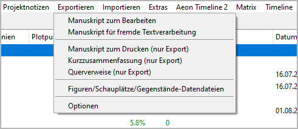
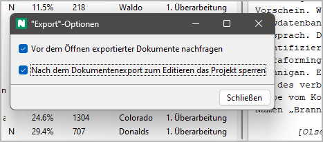

Exportieren-Menü
Dateiexport

Manuskript zum Bearbeiten
Ein ODT-Dokument exportieren, das bearbeitet und zurückgelesen werden kann
Mit Exportieren > Manuskript zum Bearbeiten
kann man create a text document that is split into sections
(to be seen in the Navigator).
Der Dateinamenszusatz lautet _Manuskript_tmp.
Only „normal“ chapters and sections are exported. Kapitels and sections marked „unused“ are not exported.
Abschnittstitels are invisible, but appear in the Navigator.
Kapitels and sections can neither be rearranged nor gelöscht.
Mit Writer kann man split sections by inserting headings or a section divider:
Heading 1 → Neu part Titel. Wahlweise kann man add a description, separated by
|.Heading 2 → Neu chapter Titel. Wahlweise kann man add a description, separated by
|.###→ Abschnitt divider. Wahlweise kann man append the section Titel to the section divider. You can also add a description, separated by|.
Wichtig
Dokuments with split sections are automatically discarded after the novelibre project is updated.
Text markup: Bold and italics are supported. Other highlighting such as underline and strikethrough are lost.
Manuskript für fremde Textverarbeitung
Ein ODT-Dokument exportieren, das bearbeitet und zurückgelesen werden kann
Mit Exportieren > Manuskript für fremde Textverarbeitung
kann man create a text document with visible section markers.
Der Dateinamenszusatz lautet _proof_tmp.
Bemerkung
This document retains its section information even if it is converted to other formats and back again. This may work with popular commercial word processors and even with web-based word processors such as Google Docs.
Only „normal“ chapters and sections are exported. Kapitels and sections marked „unused“ are not exported.
The document contains chapter and section headings. However, changes will not be reimported.
The document contains section
[scx]markers. Do not touch lines containing the markers if you want to be able to write the document back to novelibre format.Kapitels and sections can neither be rearranged nor gelöscht.
When editing the document kann man split sections by inserting headings or a section divider:
Heading 1 → Neu part Titel. Wahlweise kann man add a description, separated by
|.Heading 2 → Neu chapter Titel. Wahlweise kann man add a description, separated by
|.###→ Abschnitt divider. Wahlweise kann man append the section Titel to the section divider. You can also add a description, separated by|.
Wichtig
Dokuments with split sections are automatically discarded after the novelibre project is updated.
Text markup: Bold and italics are supported. Other highlighting such as underline and strikethrough are lost.
Manuskript zum Drucken (nur Exportieren)
Ein ODT-Dokument exportieren
Mit Exportieren > Manuskript zum Drucken (nur Exportieren) kann man create a text document for further use, e.g. when you are finished with novelibre.
Hinweis
In contrast to the Manuskript for editing, this document is not divided internally into sections, which could facilitate further processing and reformatting.
The document is placed in the same folder as the project.
Dokument’s filename:
<project name>.odt.Only „normal“ chapters and sections are exported. Kapitels and sections marked „unused“ are not exported.
Teil Titels appear as first level heading.
Kapitel Titels appear as second level heading.
Abschnitte are separated by
* * *. The first line is not indented.Beginning from the second paragraph, paragraphs begin with indentation of the first line.
Abschnitte marked „attach to previous section“ appear like continuous paragraphs.
Text markup: Bold and italics are supported. Other highlighting such as underline and strikethrough are lost.
Kurzzusammenfassung (nur Exportieren)
Ein ODT-Dokument exportieren
Mit Exportieren > Kurzzusammenfassung (nur Exportieren)
kann man create a text document containing a brief synopsis
with part, chapter, and sections Titels only.
Der Dateinamenszusatz lautet _brf_synopsis.
Only „normal“ chapters and sections are exported. Kapitels and sections marked „unused“ are not exported.
Teil Titels appear as first level heading.
Kapitel Titels appear as second level heading.
Abschnittstitels appear as plain paragraphs.
Querverweise (nur Exportieren)
Ein ODT-Dokument exportieren
Mit Exportieren > Querverweise (nur Exportieren)
kann man create a text document containing navigable cross references.
Der Dateinamenszusatz lautet _xref.
The cross references are:
Abschnitte per character,
sections per location,
sections per item,
sections per tag,
characters per tag,
locations per tag,
items per tag.
Figuren/Schauplätze/Gegenstände-Datendateien
Exportieren XML files that can be imported into other projects
Mit Exportieren > Figuren/Schauplätze/Gegenstände-Datendateien kann man create a set of XML files containing the project’s characters, locations, and items with all their properties. These files can be used to transfer the characters, locations, and items to another project.
Hinweis
To import XML-Datendateis from another project, use the Importieren command in the Figuren, Schauplätze, or Gegenstände-Menü.
Optionen
Project independent program settings
Mit Exportieren > Optionen You can open a dialog for settings concerning the document export.

Vor dem Öffnen exportierter Dokumente nachfragen
This Auswahlfeld controls the behavior on document export.
If ticked, you will be asked whether you want to have novelibre launch Writer or Calc with the newly created document opened.
If unticked, novelibre will launch Writer or Calc with the newly created document opened right away.
Nach dem Dokumentenexport zum Editieren das Projekt sperren
This Auswahlfeld controls the behavior on opening documents for editing.
If ticked, novelibre will lock the project when launching Writer or Calc.
If unticked, novelibre won’t lock the project when launching Writer or Calc.